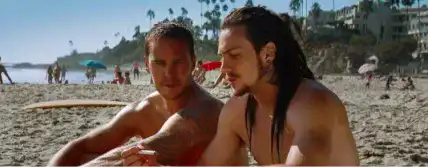

SAVAGES, LE RÉALISATEUR
Réalisateur à succès, Oliver Stone n’est
certainement pas un nom qui vous est inconnu.
Vous avez d’ailleurs probablement déjà vu
certains de ses films..

Oliver Stone © parismatch.com
Son enfance
Né le 15 septembre 1946 à New York, Oliver Stone
est la progéniture d’une famille juive américaine.
Son père est un financier de Wall Street (ce qui lui
inspirera un film plus tard) et sa mère est française,
catholique de religion. Élevé dans le privilège, il est
néanmoins plus souvent avec sa baby sitter que ses
parents qui partent souvent en voyage. Stone fait
ses études à Yale et ne termine pas le second
semestre
À 21 ans, il est arrêté pour possession de marijuana
au Mexique et accusé de trafic ; mais les charges
sont ensuite retirées. Suite à cette aventure, il
s’installe à New York afin d’y étudier la réalisation de
film. Cela résulte en la réalisation de trois courts
métrages. Il obtient son diplôme en 1971.
Afin de subvenir à ses besoins durant l’écriture de
plusieurs scénarios, Stone devient conducteur de
taxi, facteur, vendeur puis assistant de production.
Il finit par réaliser un film d’horreur à petit budget :
“La Reine du Mal”.
Ses années cinéma
Oliver Stone a réalisé et écrit de nombreux films qui
n’ont, le plus souvent, rien en commun. Il réalise des
films sur des Présidents américains : JFK, Nixon ; un
documentaire sur Fidel Castro ; des films critiques
sur la guerre du Vietnam : Platoon, Né un 4 juillet ;
entre autres. Ces derniers films témoignent de son
point de vue critique sur cette guerre et lui offrent
une véritable consécration dans le monde du
cinéma. Stone fut aussi le premier réalisateur à
examiner l’effet qu’a eu le 11 novembre sur les
hommes avec le film World Trade Center.
Pourtant, il est aussi capable d’écrire des Thrillers
ultra violents comme l’Année du Dragon et Scarface
et de diriger le très controversé Tueurs Nés.
N’oublions pas non plus que son premier grand film
datant de 1981 était un film d’horreur : La Main du
Cauchemar.
Oliver Stone et Savages
Les deux facettes de Stone se marient dans Savages,
l’adaptation du roman de Don Winslow. Le film nous
rappelle le pouvoir des cartels de drogue mexicains
capable de traverser la frontière entre les deux pays
et dont les membres sont capables d’une forme de
violence inouïe qui leur est propre. Il est aussi
intéressant de noter que le leader du cartel de
drogue est une femme, Elena, qui est aussi
impitoyable que n’importe quel homme et que son
homme de main, Lado, est à la fois sadique et prêt à
tout pour parvenir à ses fins. En opposition avec ces
mauvais personnages, Savages met en scène les
“gentils” et n’a pas peur de jouer avec les conventions
imposées sur le genre ou la sexualité. Le film est la
preuve ultime des capacités hétérogènes d’Oliver
Stone.
LISTE DE SES OEUVRES
Liste non exhaustive des films réalisés par notre
réalisateur, Oliver Stone
De 1974 à 2000
La Reine du mal, 1974
La Main du cauchemar, 1981
Salvador, 1986
Platoon, 1986
Wall Street, 1987
Conversations nocturnes, 1988
Né un 4 juillet, 1989
The Doors, 1991
JFK, 1991
Entre Ciel et Terre, 1993
Tueurs nés, 1994
Nixon, 1995
U-Turn, 1997
L'Enfer du dimanche, 1999
Depuis 2000
Alexandre, 2004
World Trade Center, 2006
W. : L'Improbable Président, 2008
Wall Street : L'argent ne dort jamais, 2010
Savages, 2012
Snowden, 2016